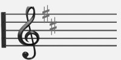
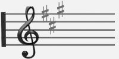
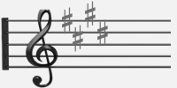
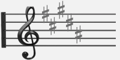
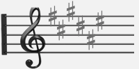
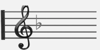
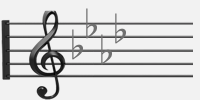
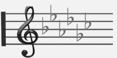
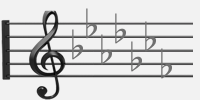

Key Signature
 G
G- D
- A
- E
- B
- F♯
 C♯
C♯
- F
 B♭
B♭ E♭
E♭- A♭
 D♭
D♭- G♭
- C♭
| Key | I△7 | IIm7 | IIIm7 | IV△7 | V7 | VIm7 | VIIm7(♭5) |
|---|---|---|---|---|---|---|---|
| C | C△7 | Dm7 | Em7 | F△7 | G7 | Am7 | Bm7(♭5) |
| D♭ | D♭△7 | E♭m7 | Fm7 | G♭△7 | A♭7 | B♭m7 | Cm7(♭5) |
| D | D△7 | Em7 | F♯m7 | G△7 | A7 | Bm7 | C♯m7(♭5) |
| E♭ | E♭△7 | Fm7 | Gm7 | A♭△7 | B♭7 | Cm7 | Dm7(♭5) |
| E | E△7 | F♯m7 | G♯m7 | A△7 | B7 | C♯m7 | D♯m7(♭5) |
| F | F△7 | Gm7 | Am7 | B♭△7 | C7 | Dm7 | Em7(♭5) |
| G♭ | G♭△7 | A♭m7 | B♭m7 | B△7 | D♭7 | E♭m7 | Fm7(♭5) |
| G | G△7 | Am7 | Bm7 | C△7 | D7 | Em7 | F♯m7(♭5) |
| A♭ | A♭△7 | B♭m7 | Cm7 | D♭△7 | E♭7 | Fm7 | Gm7(♭5) |
| A | A△7 | Bm7 | C♯m7 | D△7 | E7 | F♯m7 | G♯m7(♭5) |
| B♭ | B♭△7 | Cm7 | Dm7 | E♭△7 | F7 | Gm7 | Am7(♭5) |
| B | B△7 | C♯m7 | D♯m7 | E△7 | F♯7 | G♯m7 | A♯m7(♭5) |
GC♯B♭E♭D♭